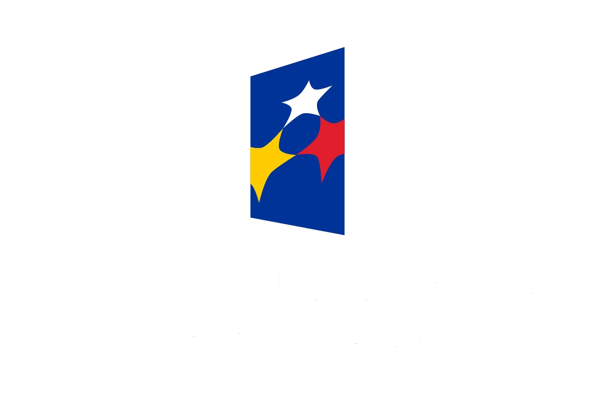
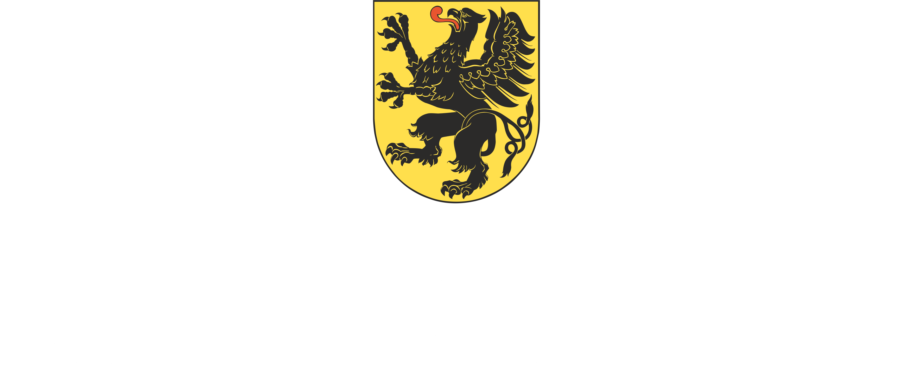

Projekt miał na celu zwiększenie atrakcyjności i konkurencyjności lokalu gastronomicznego poprzez modernizację wyposażenia i przestrzeni. Zrealizowano wymianę systemu audio, mebli, podłóg oraz markiz, wykonano nową aranżację ogródka gastronomicznego i zakupiono profesjonalne urządzenia gastronomiczne. Działania te poprawiły komfort gości, estetykę lokalu oraz standard obsługi. Projekt został również dostosowany do wymogów bezpieczeństwa i higieny związanych z COVID-19, co przyczyniło się do zwiększenia liczby gości, wzrostu obrotów oraz skutecznej promocji środków unijnych.
Wartość projektu: 173 211,01 PLN, dofinansowanie z UE: 147 229,35 PLN.


